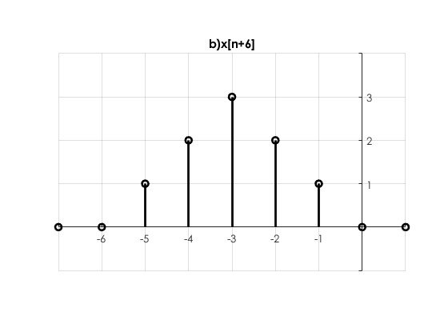

INSTITUTO POLITÉCNICO NACIONAL
UNIDAD PROFESIONAL INTERDISCIPLINARIA EN INGENIERÍA Y TECNOLOGÍAS AVANZADAS
Análisis de Señales y Sistemas
Autor: Noguerón Soto Hugo de Jesús
Profesor: Dr. Rafael Martínez Martínez
Contents
Objetivos
- Manipulación básica de MATLAB
- Gráficas de señales reales y complejas discretas
- Transformación de señales discretas (escalamientos y traslaciones)
- Cálculo de energía y potencia de señales discretas
Introducción
Para poder escalar una señal de manera horizontal, solo debemos de multiplicar su argumento por una constante
Es decir; generar una nueva señal, que llamaremos , donde:
Si , entonces tendremos una expansión horizontal.
Si , entonces tendremos una compresión horizontal.
Además se debe de tener en cuenta que al estar trabajando con señales en tiempo discreto; sólo se considerarán los valores de para
Desarollo:
Problema 1.
Crea una función que se llame y reciba dos parámetros y , la función debe regresar la evaluación , esta función debe trabajar con , y
function [f] = fun1(r,w)
syms n;
f=r^n*(cos(w*n)+sin(w*n)*1j);
end
Problema 2.
Construya una función que gráfique funciones de  y pruebe su código mostrando la gráfica de vs para para
y pruebe su código mostrando la gráfica de vs para para
n=-2:10;
a=0.9;
x=@(n) n.*(a.^n).* heaviside(n);
Figura (n,x(n),'x[n]')

Problema 3.
Construya una función que gráfique funciones de y pruebe su código mostrando la gráfica de la función exponencial del primer problema. Reporte la gráfica de para , y . Reporte la gráfica de vs y vs
r=1.1; w=0.5; f=@(n) r.^n.*(cos(w.*n)+sin(w.*n).*1j); FiguraComp(n,real(f(n)),imag(f(n)))
mag= abs(f(n));
Figura (n,mag,'|f[n]|')
ang= angle(f(n));
Figura (n,ang,'<f[n]')
Problema 4.
Programe una función que calcule la energía de una señal en tiempo discreto, la función se debe llamar energiadis. La función recibe dos paramétros de entrada: el vector de tiempo y las alturas asignadas. La función regresa la energia de la señal y despliega la gráfica de la señal.
function [ E ] = energiadis( h)
ff=h.^2;
E=sum(ff);
end
Problema 5.
Resuelva el problema 3.1.1 c) de Lathi
Encuentre la energía de la señal representada en la figura.
u=@(n) (n>=0 & n>=0);
n=-4:6;
x=@(n) n.*(3.*(u(n+3)-u(n-4)));
Figura(n,x(n),'x[n]')
Para encontrar la energía de la señal anterior, solo es necesario mandar a llamar a la función energiadis y asignarle el valor que nos arroja , pero por motivos de sintaxis; no se puede ejecutar el código, ya que éste manda un error que no pudo ser corregido a tiempo.
energiadis(x(n))
Problema 6
Resuelve el problema 3.2.3 de Lathi
Para la señal que se muestra en la figura, dibuje las siguientes señales:
u=@(n) (n>=0 & n>=0); n=-12:21; x=@(n) (n.*(u(n)-u(n-4)))+((-n+6).*(u(n-4)-u(n-6))); Figura(n,x(n),'x[n]') axis equal xlim([-1 7]) ylim([-1 4])
Figura(n,x(-n),'a)x[-n]') axis equal xlim([-7 1]) ylim([-1 4])
Figura(n,x(n+6),'b)x[n+6]') axis equal xlim([-7 1]) ylim([-1 4])
Figura(n,x(n-6),'c)x[n-6]') axis equal xlim([5 13]) ylim([-1 4])
Figura(n,x(3.*n),'d)x[3n]') axis equal xlim([-1 7]) ylim([-1 4])
uu=@(nn) (nn>=0 & nn>=0);
nn= 0:3:21;
xx=@(nn) ((nn./3).*(uu(nn)-uu(nn-10)))+(((-nn./3)+6).*(uu(nn-10)-uu(nn-18)));
Figura(nn,xx(nn),'e)x[n/3]')
xlim([-0 19])
ylim([-1 4])
Figura(n,x(3-n),'f)x[3-n]') axis equal xlim([-4 4]) ylim([-1 4])
Apéndices
- 1 function FiguraComp(X1, Y1, Z1)
figure1 = figure;
axes1 = axes('Parent',figure1);
hold(axes1,'on');
stem3(X1,Y1,Z1,'LineWidth',2,'Color',[0 0 0]);
xlabel('n'); xlim([-2 20])
ylabel('Real');
zlabel('Imag');
view(axes1,[14.9 44.4]);
box(axes1,'on');
grid(axes1,'on');
set(axes1,'FontName','Century Gothic');
- 2 function Figura(X1, Y1,titl)
figure1 = figure;
axes1 = axes('Parent',figure1);
hold(axes1,'on');
stem(X1,Y1,'LineWidth',2,'Color',[0 0 0]);
title(titl);
set(axes1,'Color',[1 0.968627452850342 0.921568632125854],'FontName',...
'Century Gothic','XAxisLocation','origin','XGrid','on','YAxisLocation',...
'origin','YGrid','on');
Referencias
- B.P. Lathi. (2005). Linear Systems and Signals. New York: Oxford University Press, Inc.
- Especifique límtes de ejes. 27 Septiembre 2019. Sitio web https://la.mathworks.com/help/matlab/creating_plots/change-axis-limits-of-graph.html